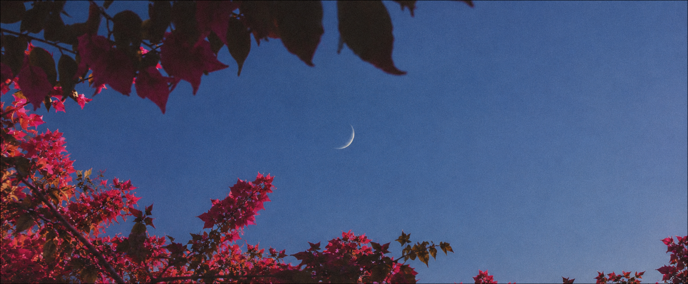
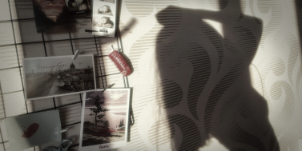
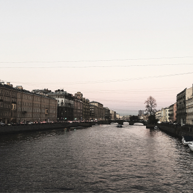
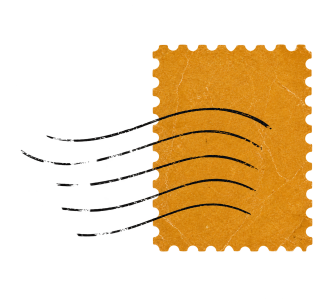
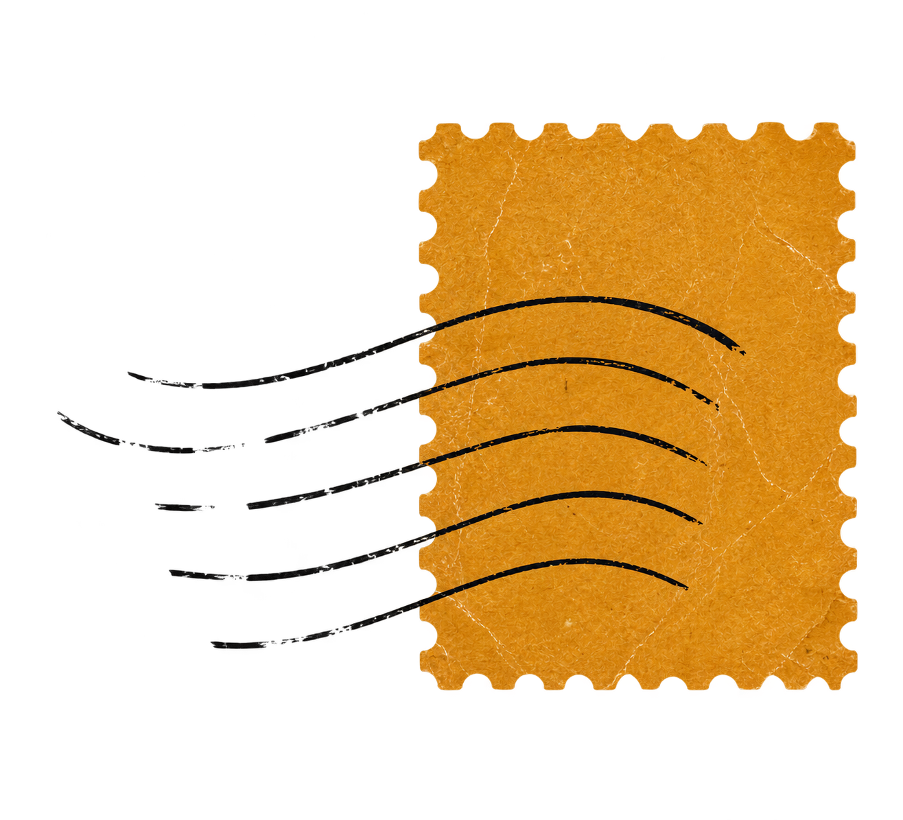

пункты выдачи
wildberries
ул. вавиловых 9к5, санкт-петербург
ozon
ул. вавиловых 9к5, санкт-петербург

15.11
листать дальше ↓впервые за долгое время я буду праздновать свой день рождения в россии, поэтому решила собрать вишлист — мне захотелось получить подарки не только в виде переводов на карту, а ещё и в виде чего-то осязаемого, выбранного и подаренного вами.
день рождения для меня — один из самых любимых и важных праздников. сейчас я многое узнаю о себе, своих желаниях и предпочтениях, и мне интересно делиться этим с вами.
я немного привереда и контролёр, поэтому мне спокойнее заранее знать, что подарки мне действительно понравятся ахах. но сам вишлист для меня — не столько список вещей, сколько повод чуть больше сосредоточиться на себе и своих желаниях. а заодно — помочь вам меня порадовать ♡
при этом никаких обязательств: я рада любому вниманию, поздравлениям, денежкам и просто тому, что вы есть в моей жизни.



(01)(02)
если что-то не получится, можешь спросить у меня в лс — ниже будет контакт ♡
выбери до двух вещей — выбранные позиции сохраняются только в этом браузере.
это совершенно нормально ♡ можно оставить денежку по реквизитам ниже, если так удобнее, но это тоже совсем не обязательно. а можно просто отправить мне открытку в личные сообщения — я буду рада любому знаку внимания и тёплым словам.
если что-то непонятно — пишите в тг
wildberries
ул. вавиловых 9к5, санкт-петербург
ozon
ул. вавиловых 9к5, санкт-петербург
сусличья нора